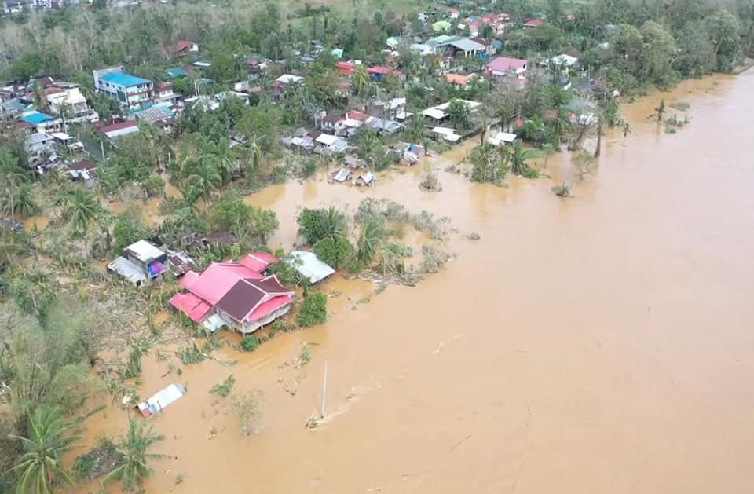
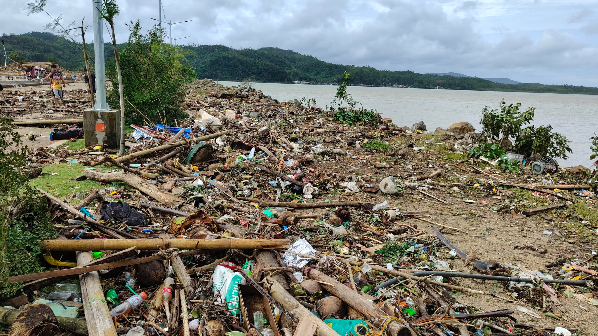
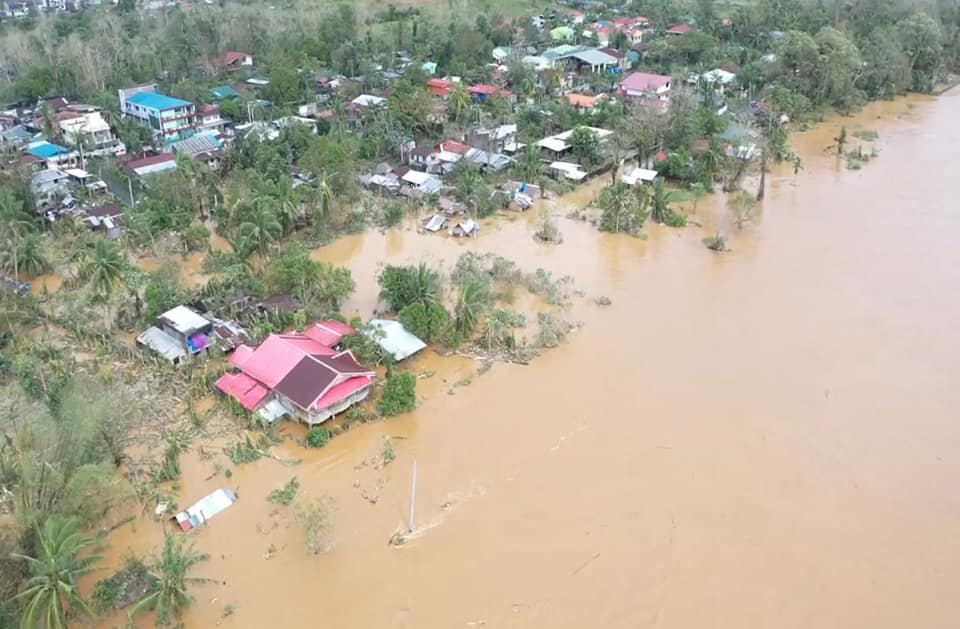
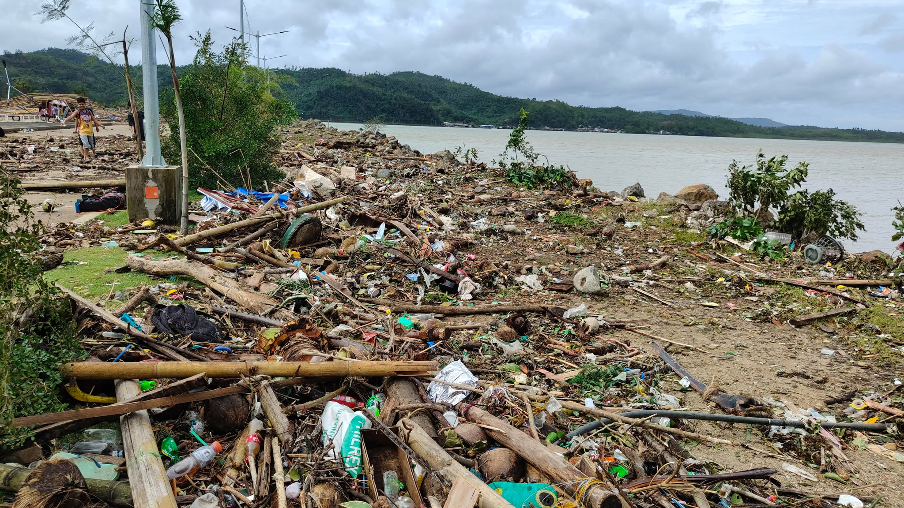

Why Preparedness Matters
Camarines Norte faces multiple natural hazards including typhoons, storm surges, flooding, landslides, and earthquakes. Preparedness saves lives—your plans and knowledge are your first line of defense. By knowing the warning signs, following official advisories, and preparing basic essentials like food, water, medicines, and important documents, you can greatly reduce your risk. Staying informed and planning ahead turn ordinary families into safer, more resilient communities.